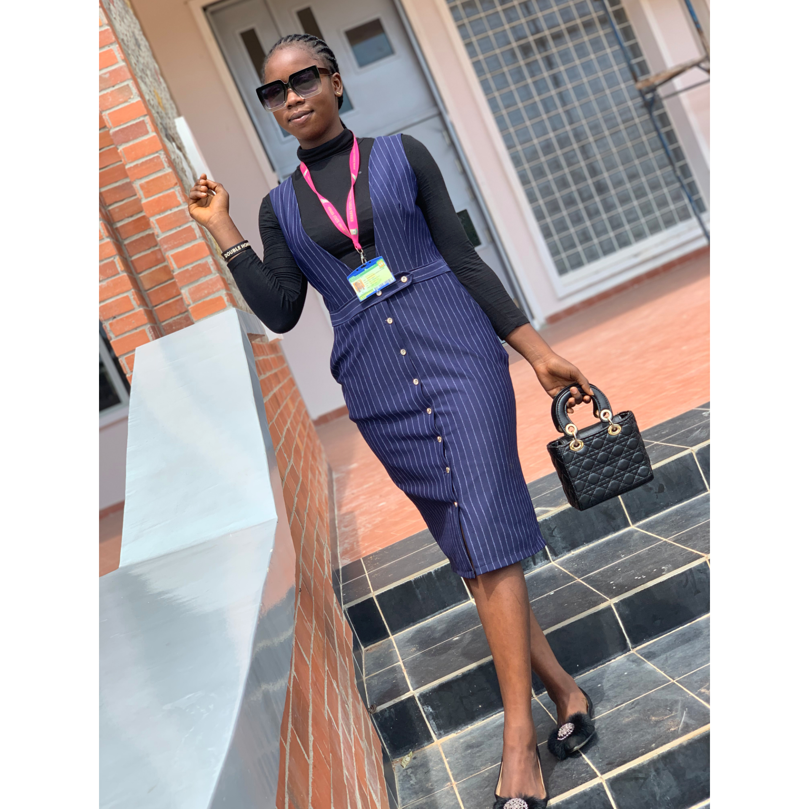

BACK TO PAGE
MY ACHIEVEMENT

my achievement will surely reflect at the time that i was called upon by my school to participate in an inter school debate competition.
i was really nervous because i didnt have the courage to face the crowd. but wih the help
my parents,God and friends, i was able summon such outrageous courage.
it was a normal routine for me to stay behind after classes for the tutorial and encouragement for the competition.
the d day had already come when me up asearly as 4.o clock for revision.
i was absolutely confident about this competition.
During the tutorial earlier, i picked the two wirds from the teacher which are COMPOSURE and CONFIDENCE.
i held on to these tow magic words for that the
when i got to the venue, i was intimidated by the way the judges were looking like but with time i shrugged it off.
when it was my turn,i took the bull by its horn and when straight to the point. The jugdes were impressed with the way i composed myself.
At the end of the debates, the judges were full of my praises and eventually gave me my reward which was a gold medal and the cup for my school.
i could actually say that is my best ever achievement.
Department of Library and Information Science,
College of Information and Communication Technology,
Kwara State University, Malete.
Matric Number: 18/47LS/00945
CLICK LINK